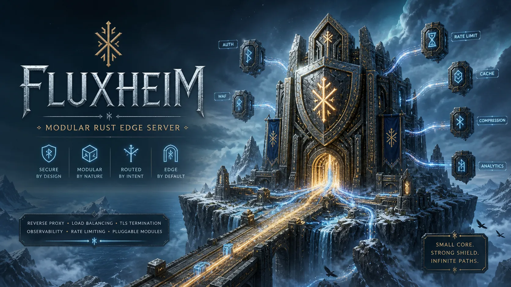

Modular reverse proxy, cache, and static host written in Rust. Secure by default. TLS and ACME built in. Container-native and production-ready.
include_conf_d = false
[server]
listen = ["0.0.0.0:80"]
tls_listen = ["0.0.0.0:443"]
default_vhost = "fluxheim.eu"
[tls]
enabled = true
backend = "rustls"
profile = "intermediate"
min_protocol = "tls1.2"
alpn = "http1-and-http2"
curve_preferences = ["X25519", "CurveP256", "CurveP384"]
[[vhosts]]
name = "fluxheim.eu"
hosts = ["fluxheim.eu"]
[vhosts.tls]
enabled = true
[vhosts.tls.certificate]
cert_path = "/etc/fluxheim/tls/fluxheim.eu/fullchain.pem"
key_path = "/etc/fluxheim/tls/fluxheim.eu/privkey.pem"
[vhosts.web]
root = "/srv/sites/fluxheim.eu"
index_files = ["index.html"]Fluxheim ships as focused, modular builds — use only what your deployment needs.
Written in Rust with a pinned stable toolchain. No buffer overflows, no use-after-free, no data races by construction.
Built on Cloudflare's battle-tested Pingora framework. Async-first, connection pooling, and production-grade HTTP/1.1 + HTTP/2 support.
Compile only what you need. Focused profiles for static site, cache edge, reverse proxy, or the full production bundle.
rustls-first with optional OpenSSL/BoringSSL/s2n backends. Automatic certificate issuance via HTTP-01 and TLS-ALPN-01. Multi-cert SNI.
Memory, disk, tiered, and encrypted cache backends. Distributed peer fill. Cache warm/purge endpoints. Range caching for large objects.
Rootless Podman images for Wolfi, Alpine, SUSE Micro, and Debian. Systemd/RPM for native deployments. Zero external assets on startup.
Opt-in Prometheus metrics listener, OTLP metrics export, trace context propagation, and OTLP trace export for full observability.
Opt-in PHP-FPM FastCGI bridge for WordPress-style front-controller applications. Strict script resolution and bounded request handling.
Strict config validation, request limits, safe filesystem handling, dependency policy via cargo deny, and CodeQL CI scanning.
Download a pre-built binary, drop in a config file, and start serving. Native systemd units and container images included.
# Download and extract the full build
curl -L https://github.com/valkyoth/fluxheim/releases/download/v1.3.2/fluxheim-1.3.2-full-x86_64-linux.tar.gz \
| tar xz
# Move binary to system path
sudo mv fluxheim /usr/local/bin/
# Validate your config before starting
fluxheim --check-config --config /etc/fluxheim/fluxheim.toml
# Run with systemd (included unit file)
sudo systemctl enable --now fluxheim# Pull from GitHub Container Registry
podman pull ghcr.io/valkyoth/fluxheim:1.3.2
# Run rootless with your config mounted
podman run -d \
--name fluxheim \
-p 8080:8080 -p 8443:8443 \
-v /srv/sites:/srv/sites:ro \
-v ./fluxheim.toml:/etc/fluxheim/fluxheim.toml:ro \
ghcr.io/valkyoth/fluxheim:1.3.2
# Available image variants: full, cache, proxy# Clone and build the default profile
git clone https://github.com/valkyoth/fluxheim
cd fluxheim
# Default build (proxy + web + cache + tls-rustls + security)
cargo build --release
# Or build a focused profile
cargo build --release --no-default-features \
--features profile-proxy-edge,acme-client
# Validate config and run
cargo run --release -- \
--check-config --config examples/fluxheim.tomlBuilt for operators who want a modern, auditable stack without hidden legacy behaviour.
Config validation is strict. Ambiguous or insecure options are rejected, not silently accepted.
Reproducible builds. Every dependency is pinned. cargo audit and cargo deny run in CI.
Run without root. Internal ports 8080/8443 by default. Explicit runtime images for different operational policies.
Copyleft license compatible with many OSS licenses. EU-originated, legally clear for government and enterprise use.
A glance at what Fluxheim looks like in a production deployment.
